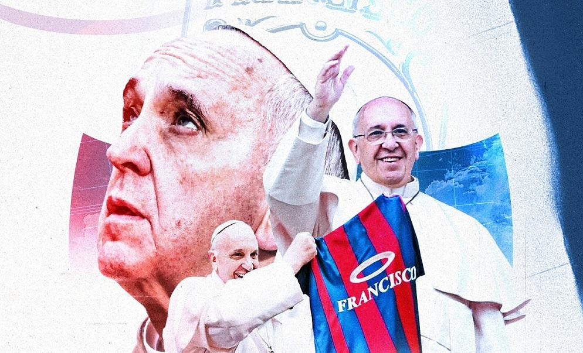

Playoffs Confirmados
Rival Confirmado para el primer partido de playoffs.

Homenaje al Papa
El homenaje que le dara el club San Lorenzo de almagro al sumo pontifice.
Rival Confirmado para el primer partido de playoffs.

El homenaje que le dara el club San Lorenzo de almagro al sumo pontifice.